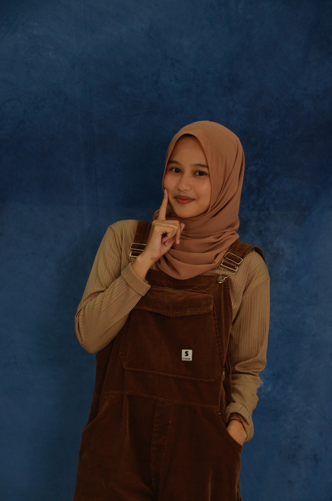

Terimakasih sudah menjadi bagian terbaik dan juga menjadi bagian terindah di dalam hidup aku yaa sayangg. Aku sangat sangat bersyukur karna sayang udah hadir di hidup aku. Jujur aku sendiri gatau kata apa yang pas untuk mendefinisikan hadir nya sayang di hidup aku, karna memang aku nya merasa sangat sangat beruntung sayang udah mau hadir di hidup aku yang berantakan ini dan mau untuk menemani aku untuk melewati semua rasa suka dan duka yang ada
Aku minta maaf karna masi belum bisa menjadi yang terbaik buat kamu dan masi sering melakukan kesalahan yang membuat sayang kecewa sama aku. Buat sekarang dan kedepannya aku ngga mau ngecewain sayang terus terusan. Aku bakal selalu ngasi yang terbaik buat sayang apapun itu
Semoga apa yang udah kita impikan selama ini bisa terwujud yaa sayangg. Jangan pernah ngerasa kalo sayang itu udah merepotkan dan menjadi beban buat aku, karna justru kenyataan yang sebenernya sayang itu justru hadiah terindah yang pernah hadir di hidup aku. Jangan pernah menyerah dan ngerasa sendiri okaayy, karna masi banyak banget orang yang sayang sama sayang dan salah satu nya itu aku yang selalu ada buat sayang sampai kapan pun itu
Maaf yaa aku ngga bisa ngasi apa apa di hari spesial nya sayang ini, selamat menikmati hari bahagia nya yaa sayangg
I Always Love You Forever ❤️



aku memang belum sempurna, tapi perasaanku ke sayang tulus sepenuh hati dan akan tetap utuh sampai kapan pun